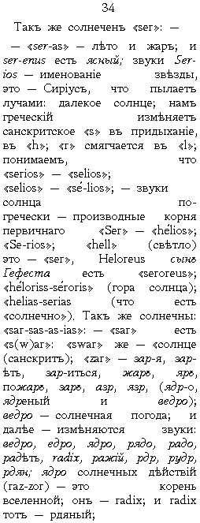
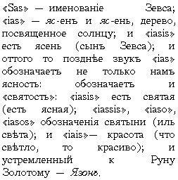

Glossolalia (Section 34)
GLOSSOLALIA

Similarly solar is "ser": --
-- "ser-as" is -- summer and heat; and ser-enus is the clear one; the sounds Ser-ios are -- the name of a star; this is -- Sirius, that is aflame with rays; the distant sun; Greek changes for us the Sanskrit "s" into aspiration, into "h"; "r" softens into "l"; we comprehend, that "serios" is -- "selios" -- "selios" is -- sé-lios"; -- the sounds of the sun in Greek are -- products from the primal root "Ser" -- "hélios"; "Se-rios"; "hell" (light) this is -- "ser," Heloreus the son of Hephaestus is "seroreus"' "héloriss-séroris" (mountain of the sun); "helias-serias" (that is "heliacal-solar-sunny"). Just as solar are: "sar-sas-as-ias":-- "sar" is "s(w)ar" -- sun (Sanskrit); "zar" -- is dawn in Russian [zar-ia], and to dawn [zar-et'], to seethe with heat [zar-it'sia], heat [zhar],[iar], fire [pozhar] [zar], [azr], [iazr] (nucleus iadr-o], succulent [iadrenyj] and a clear day [viodro]); a clear day is -- sunny weather; and further on -- the sounds alternate: clear day [viodro], [edro], nucleus [iadro], rowlike [riado], glad [rado], to oblige [radet'], radix, corpulent [razhij], rdr, rudr, red [rdian], the nucleus [iadro] of the sun's actions (raz-zor) -- this is the root of the Universe; it is -- radix, and the radix is -- ruddy [rdianyj];

"Sas" is -- the name of Zeus; "ias" is -- something clear [ias-en] and an ash [ias-en'], is the tree, dedicated to the sun; and "iasis" is one who can be seen clearly [iasen] (a son of Zeus); and from here the sound "ias" later signifies not only clarity of vision to us: it signifies the "sacred": "iasis" is the "sacred" (it is clear [iasnaia]); "iassis," "iaso," "iasos" are significations of the sacred (or of the light); and "iais" -- the beauty (that which is bright is beautiful); and striving after the Golden Fleece is -- Jason.